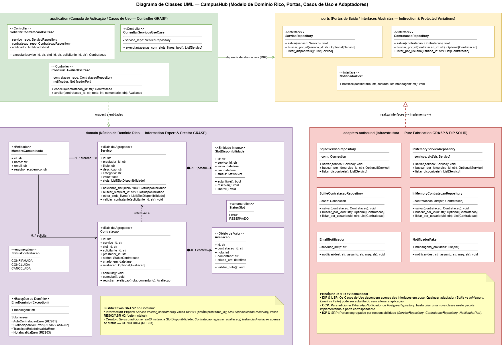
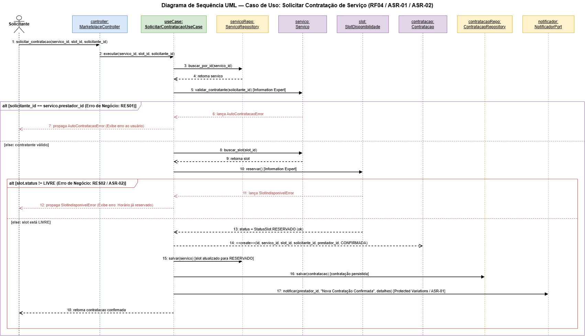
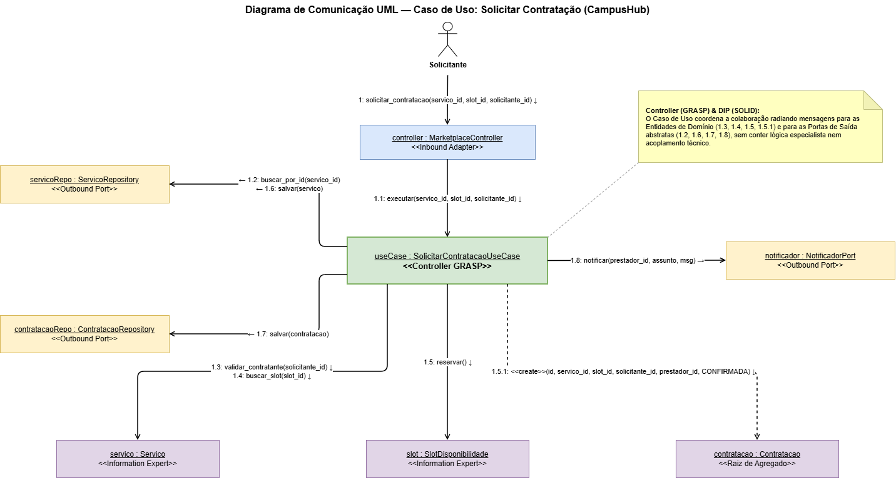
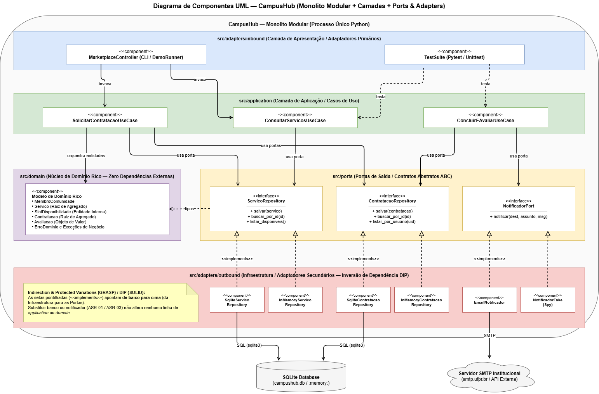

Tema 11: Marketplace de Serviços dentro do Campus — Controle de disponibilidade, contratação sem overbooking, conclusão e avaliações.
Monolito Modular
+ Organização em Camadas
+ Padrão Ports & Adapters (Arquitetura Hexagonal)
+ Modelo de Domínio Rico & DIP (SOLID)
Questão Central do Trabalho: "Como este sistema deve ser organizado para atender aos requisitos atuais e permitir sua evolução sem gerar dependências desnecessárias?"
Estudantes, técnicos e docentes demandam serviços especializados de curto prazo (revisão ABNT/LaTeX, mentorias, análises estatísticas).
Hoje a oferta ocorre de forma informal (murais e grupos), gerando conflitos de agenda (overbooking) e insegurança quanto à reputação do prestador.
@ufpr.br) ou API WhatsApp.solicitante_id != prestador_id).CONCLUIDAs.
RF01 Cadastrar Oferta →
RF02 Gerenciar Agenda (Slots) →
RF03 Consultar/Filtrar Serviços Livres →
RF04 Solicitar Contratação (Reserva Slot) →
RF05 Cancelar (Libera Slot) →
RF06 Concluir Serviço →
RF07 Avaliar (1 a 5 ★) →
RF08 Notificar Partes.
| ASR e Atributo de Qualidade | Cenário Concreto no Sistema | Influência Direta na Arquitetura e no Design |
|---|---|---|
|
ASR-01 Modificabilidade de Integrações Externas |
Políticas da universidade podem exigir trocar o envio de e-mail SMTP por API de WhatsApp ou Telegram sem tocar em nenhuma linha das regras de negócio. |
Exigiu Ports & Adapters (Hexagonal), DIP (SOLID) e Protected Variations (GRASP): criamos a interface NotificadorPort e injetamos EmailNotificador ou NotificadorFake.
|
|
ASR-02 Consistência Transacional e Anti-Overbooking |
No ato da contratação (RF04), validar disponibilidade, mudar o slot para RESERVADO e gravar a Contratacao devem ocorrer de forma atômica, sem dupla alocação.
|
Descartou microsserviços distribuídos (consistência eventual) em favor de um Monolito Modular com transação ACID local e Modelo de Domínio Rico (Information Expert em SlotDisponibilidade.reservar()).
|
|
ASR-03 Testabilidade Isolada e Independência de Banco |
Toda a lógica de negócio deve rodar em testes automatizados determinísticos em memória (< 1s) sem servidor SGBD externo, e permitir migrar de SQLite para PostgreSQL. |
Determinou o padrão Repository (ServicoRepository, ContratacaoRepository), permitindo alternar entre InMemory...Repository (testes) e Sqlite...Repository (produção/protótipo).
|

Servico.validar_contratante() valida RES01 (detém prestador_id); SlotDisponibilidade.reservar() valida RES02 (detém status).Contratacao.registrar_avaliacao() instancia Avaliacao apenas se status == CONCLUIDA (RES03).MarketplaceController apenas coordenam o fluxo sem conter ifs de regra de negócio.Sqlite...Repository e EmailNotificador isolam SQL e SMTP fora do domínio.src/domain/ tem zero import sqlite3 ou smtplib.src/ports/ (classes abstratas ABC). Qualquer adaptador Sqlite ou InMemory é substituível sem alterar a aplicação.
alt de exceção
Todas as mensagens numeradas nos diagramas dinâmicos (1.2: buscar_por_id, 1.3: validar_contratante, 1.4: buscar_slot, 1.5: reservar, 1.6/1.7: salvar, 1.8: notificar) possuem exatamente a mesma assinatura e ordem de parâmetros no Diagrama de Classes e nos arquivos Python em src/. O disparo externo (notificar) só ocorre após a gravação atômica no repositório.

Todas as dependências de código apontam para dentro (em direção ao Domínio):
adapters/inbound (CLI, Web e Pytest) → invoca applicationapplication (UseCases) → depende apenas de domain e portsadapters/outbound (SQLite, InMemory, SMTP, Fake) → implementa ports (Inversão de Dependência - DIP)domain → não depende de ninguémsqlite3): Transações atômicas com with self.conn: garantindo que Slot e Contratacao nunca fiquem dessincronizados (ASR-02).NotificadorPort): EmailNotificador (SMTP institucional) e NotificadorFake (Spy em memória) injetados no Composition Root (src/main.py).| Critério / Atributo | Alt. A: Monolito Simples (Acoplado) | Alt. B: Microsserviços Distribuídos | Alt. C: Monolito Modular + Hexagonal (Escolhida) |
|---|---|---|---|
| Modificabilidade (ASR-01) | -- (SQL e SMTP misturados à regra) |
++ (Serviços isolados) |
++ (Isolamento via Portas e Adaptadores) |
| Consistência (ASR-02) | ++ (Transação ACID local) |
-- (Consistência eventual / Sagas) |
++ (Transação ACID local + Domínio Rico) |
| Testabilidade (ASR-03) | -- (Exige banco ativo) |
- (Testes distribuídos complexos) |
++ (Testes em memória em ms via Fakes) |
| Implantação e Custo (RES05) | ++ (Processo único simples) |
-- (Múltiplos containers e rede) |
+ (Processo único; custo inicial de criar interfaces) |
Decisão: Processo único dividido em camadas concêntricas e portas.
Trade-off: Maior estrutura inicial de pacotes e exigência de disciplina nos imports em troca de consistência ACID e baixo acoplamento.
Decisão: Entidades puras validam invariantes; persistência via interfaces Repository.
Trade-off: Exige mapeamento manual (Data Mapper) no SQLite, mas viabiliza testes unitários instantâneos.
Decisão: Isolar envio externo atrás de NotificadorPort com injeção no bootstrap.
Trade-off: Chamada síncrona atrela latência ao provedor, mas elimina necessidade de broker externo (RabbitMQ) no escopo atual.
ConsultarServicosUseCase).RESERVADO no campushub.db e dispara e-mail via NotificadorPort.AutoContratacaoError (RES01)SlotIndisponivelError (RES02 / ASR-02)TransicaoEstadoInvalidaError / PermissaoNegadaError (RES03)1. Interface Gráfica Web Interativa (http://localhost:8000):
python -m src.main --web
2. Roteiro Automatizado no Terminal (CLI):
python -m src.main
3. Suíte de Testes Automatizados (Unidade + SQLite + Controller):
pytest -v ou python -m src.tests.test_casos_de_uso
A inclusão do Front-end Web (web_controller.py) ao lado do CLI (cli_controller.py) foi feita adicionando apenas um novo Inbound Adapter, sem alterar nenhuma linha de domain/, ports/, application/ ou adapters/outbound/!
http://localhost:8000) e executar os cliques ao vivo na frente da professora!
| Cenário de Mudança | Elementos Afetados (Apenas Bordas) | Elementos 100% Inalterados | Decisão Arquitetural que Ajuda / Trade-off |
|---|---|---|---|
1. Banco de Dados:SQLite → PostgreSQL |
Criar PostgresServicoRepository e PostgresContratacaoRepository em adapters/outbound/ e injetar em main.py. |
domain/, application/, ports/, adapters/inbound/ e testes em memória. |
ADR-002 (Repository + DIP): Domínio puro sem ORM. Custo: escrever SQL/Data Mapper do novo banco. |
2. Notificações:E-mail SMTP → WhatsApp API |
Criar WhatsAppNotificador(NotificadorPort) em adapters/outbound/ e trocar 1 linha no main.py. |
domain/, application/ (UseCases), ports/ e repositórios de dados. |
ADR-003 (Protected Variations / OCP): Caso de uso só conhece NotificadorPort. |
| 3. Nova Interface: Inclusão de App Mobile / API REST |
Criar controlador REST em adapters/inbound/ convertendo JSON ↔ UseCases. |
Todo o núcleo (domain/, application/, ports/) e adapters/outbound/. |
ADR-001 (Hexagonal): Já comprovado na prática com cli_controller.py + web_controller.py! |
| 4. Aumento de Carga / Extração de Serviço | Lock transacional no Postgres (SELECT FOR UPDATE) e adaptador HttpNotificadorAdapter ou Fila Assíncrona. |
Regras de negócio em domain/ e contratos das portas em ports/. |
ADR-001 & ADR-003: Fronteiras modulares permitem extrair um adaptador para outro processo sem reescrever o domínio. |
"Como este sistema deve ser organizado para atender aos requisitos atuais e permitir sua evolução sem gerar dependências desnecessárias?"
Encapsular as regras críticas universitárias (proibição de auto-contratação RES01, bloqueio de slot contra overbooking RES02 e integridade de avaliações RES03) em entidades Python puras (src/domain/) guiadas por Information Expert e Creator (GRASP).
Fazer os Casos de Uso (src/application/) coordenarem transações dependendo exclusivamente de contratos abstratos (src/ports/), aplicando rigorosamente o Princípio da Inversão de Dependência (DIP) e o Princípio Aberto/Fechado (OCP).
Relegar banco de dados (SQLite / InMemory), mensageria (SMTP / Fake) e interface (CLI / Web) a adaptadores externos intercambiáveis (src/adapters/), garantindo testes em milissegundos hoje e evolução sem refatoração amanhã.
← → para navegar • Clique nos diagramas para ampliar